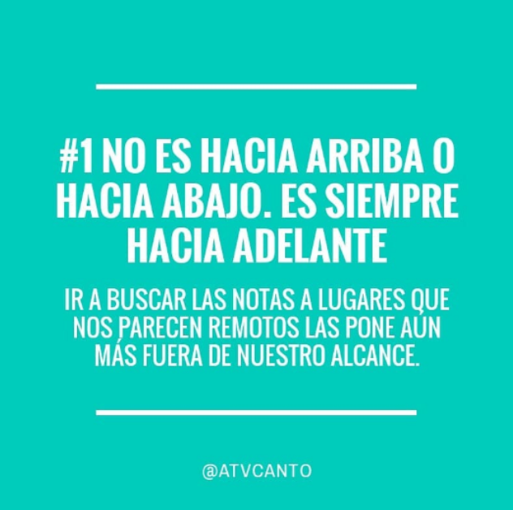
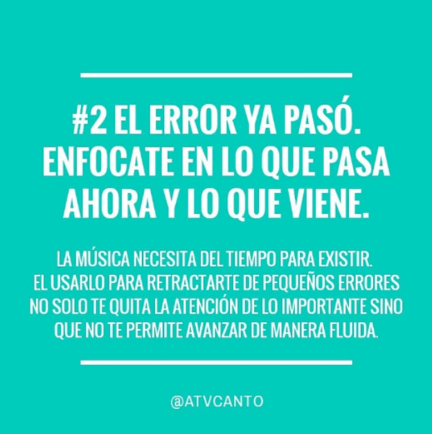
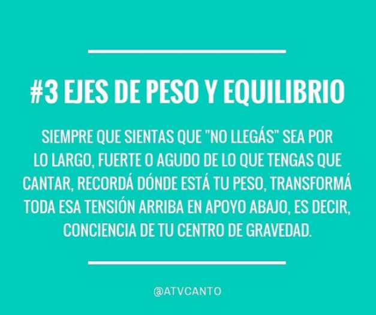
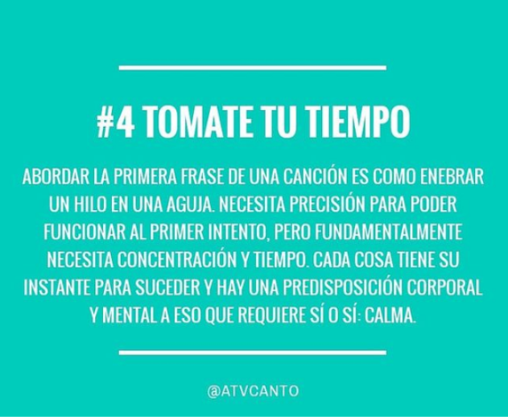
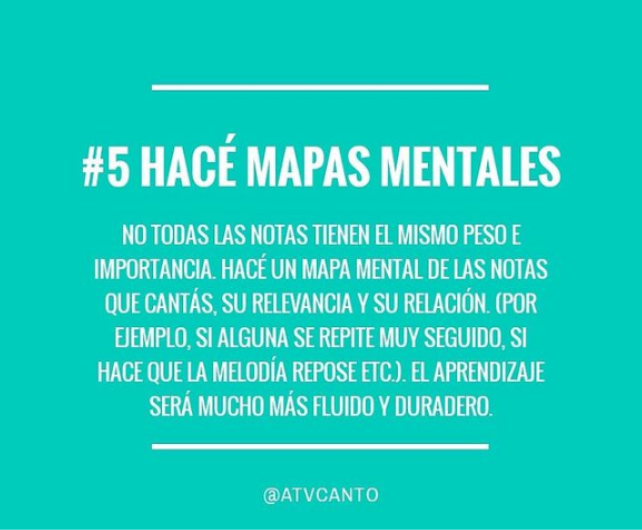
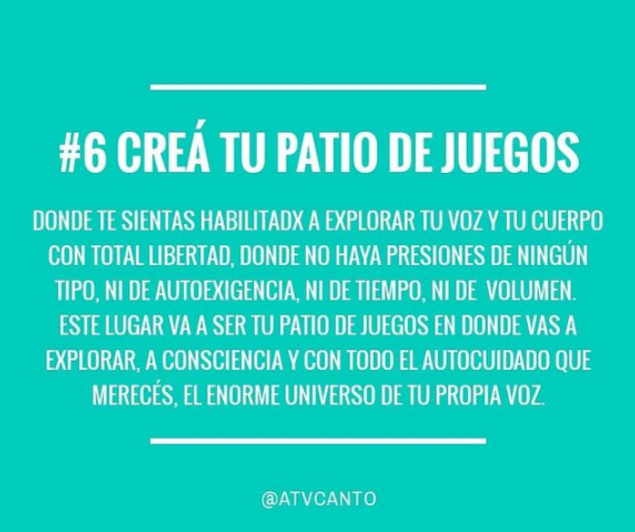
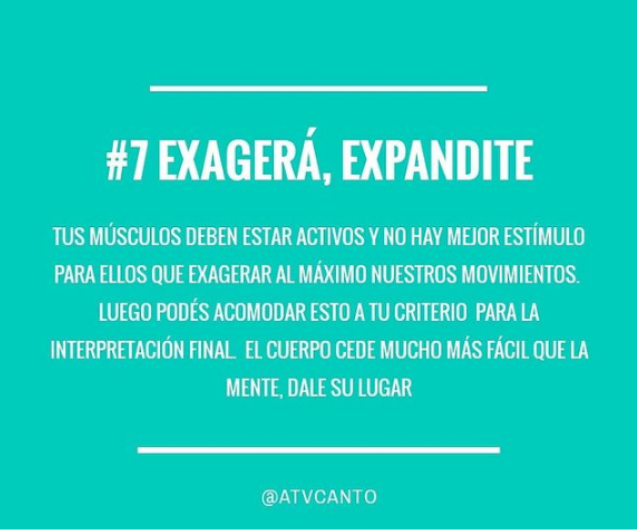
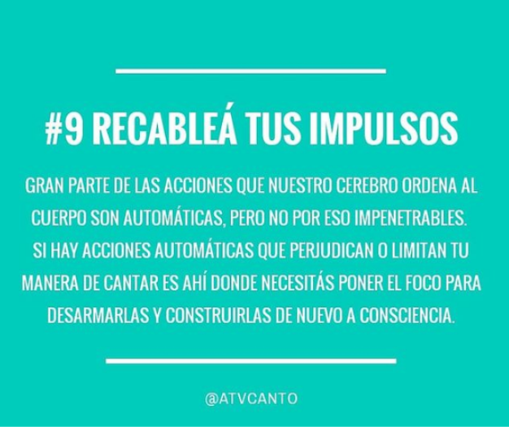
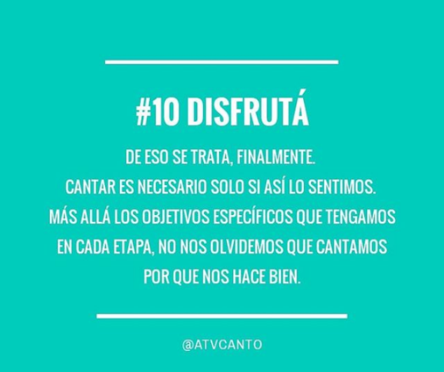

Hace ya un tiempo decidí reunir y compartir algunos de los tantos recursos que surgen dentro las clases para que quienes no las conocen los prueben y exploren.
Espero que les sirva! Si tienen otros aportes para hacer siéntanse libres de comentar o escribir en las redes.
Les leo!
El concepto de altura nos sirve mucho para reconocer y asociar el espectro grave-medio-agudo pero otras tantas veces se nos vuelve perjudicial cuando queremos encarar una melodía cantada ya que asociamos ir más agudo con "subir" y subir siempre requiere un gran esfuerzo, por lo tanto pensamos que debemos "forzar" nuestra voz. No hay nada peor para llegar a ellos que hacer esto. Lo mismo pasa en momentos de encarar notas graves o hacer escalas descendentes. Seguro alguna vez sentiste como si te “pincharas”, y eso implica un gran descenso de tono muscular que también puede ser perjudicial, como cuando bajás las escaleras así nomás, dejando que la gravedad haga lo suyo, y corrés más riesgo de caerte o doblarte el pie. La laringe no funciona así y por eso nos sirve más pensar en un “adelante”, que en un “arriba y abajo”.
Recordá que una buena técnica se basa en lograr tus objetivos siempre desde un lugar respetuoso con tu cuerpo y sin dolor.
La autoexigencia sirve para crecer o no sirve para nada, cuando pasás el límite y te empezás a juzgar por cada sílaba que pronunciás el camino se hace más lento y difícil. Aprovechá tus recursos y exprimí cada segundo de música para disfrutar conscientemente. Date el tiempo y los mimos necesarios.
Por ahí te interese: “Por qué desafino?” y “Cómo m13rd4 mantengo la concentración?” Cantar es una acción aprendida derivada de acciones corporales mucho más primitivas que involucran todo el cuerpo
Cantar se trata de modificar esas funciones primitivas para lograr emitir sonidos 'medidos' no solo en frecuencia sino en volumen, tímbrica, fonemas e inflexiones específicos. Por eso es esencial verlo de manera integral, reconocer los reflejos instintivos del cuerpo y trabajar con ellos, no ignorarlos.
La frustración lleva a intentar las cosas mil veces, una tras otra, sin pausa, y eso a su vez nos frustra más aún.
Si no sale a la primera intentemos otra vez... pero con plena conciencia de todas las instancias por las que pasaremos: la postura corporal, ubicación de las zonas más tensas, más dormidas y en el mejor de los casos más "tónicas". Luego la inhalación que atraviesa, placenteramente, todo el torso; y, gracias a ese aire, la exhalación que vendrá en forma de sonido. Todos estos momentos de transición son pequeños puntos que necesitamos unir para formar una percepción flexible y despierta de lo que pasa con nuestra voz a cada instante para, en el siguiente intento saber qué modificar.
Más sobre este tema en el post: “Las fases del canto” y “La ola de la respiración” Una manera útil para hacer un mapa melódico es tomar una nota (sea por su importancia en la escala o por lo mucho que se repite) y usarla de referencia para ubicar a las demás. Es muy útil en este caso conocer la escala sobre la cual estamos cantando (en general: mayor o menor) y cantarla varias veces de corrido en ambas direcciones.
También podemos hacernos mapas mentales para memorizar las partes de una canción usando letras para agruparlas según sus características: A, B, C, A1... etc. Paralelamente a esto en muchos casos sirve relacionar la letra con el transcurso del tema. Más que nada si la letra cuenta algo que va evolucionando o mutando al desarrollarse el tema.
Los mapas y esquemas pueden servir para todos los aspectos de una canción y para todos los niveles de detalle, como vimos. Usás alguno en particular?
El lugar más cómodo es donde tu voz se despliega con mayor placer
Para muchxs tiene que ver con la soledad, o con la acústica, con la cantidad de espacio alrededor, lo que habita ese espacio junto a cada une, la comodidad física, los puntos de contacto con ese espacio, y un gran etc. Desde ahí, en ese lugar que por algún motivo nos hace liberar nuestra voz, y el cuerpo-mente que la sostiene, desde ahí buscaremos múltiples posturas, que vayan naciendo una de otra con cuidado, y registro lo que provocan en mi voz cada una de ellas. Este registro es mi máquina del tiempo para volver a mi sitio seguro, mi lugar familiar, cuando esté lejos de él.
Posts recomendados: “Tacto”, “Mirar” Ojo, igual, y no confundir exagerar o estirar nuestra musculatura (facial, por ejemplo) con adquirir tensiones innecesarias en donde mi movimiento se paralice (abrir la mandíbula al tope, p.ej.).
La idea es ir un poco más allá de la zona de confort, pero sin llegar a la zona del dolor. Por lo general tendemos a creer que nuestras expresiones corporales son mucho más grandes de lo que son en realidad, y nos damos cuenta cuando nos ponemos un espejo enfrente. Esta poca “ambición” genera que nos encerremos en un único modo de abordar la música y nos quede una resultante a medio camino, agotada en sí misma.
Por más que resulte incómodo al principio, el uso del espejo nos deja notar más objetivamente la diferencia entre lo que percibimos de nuestras acciones y lo que se ve desde fuera.
Si resulta que nos distrae mucho vernos mientras cantamos podemos grabar un video y vernos inmediatamente después, tratando de usar un ojo amoroso y científico para notar cosas en nuestro cuerpo (pies, columna, pelvis, cuello, rostro, etc.).
El auditivo, aunque es muy importante, no tiene por qué ser el único sentido que usemos al cantar. De hecho es el que se usa para apreciar las consecuencias (el sonido resultante) y no las causas (la actividad física que lo genera). Vale aclarar que esas consecuencias nos influencian psicofísicamente y resulta en un intercambio de información cíclico y dinámico.
Tanto el contacto buscado (manos hacia mandíbula, costillas, abdomen, etc) como el orgánico (el que se da inherentemente en las partes del cuerpo (lengua con paladar, aire con fosas nasales, mucosa con faringe y laringe etc) son de gran importancia y utilidad. Esto se emparenta con el tip #4: no necesitás hacer todo rápido, necesitás hacerlo consciente.
Te puede interesar: “Tacto” Un concepto muy utilizado en el método #Feldenkrais es el "rewire" que se traduciría como "recableado". Es decir, cambiar los "cables" del sistema nervioso que da esas órdenes al resto del cuerpo. Podemos proponernos ir paso a paso:
1) Localizar esta determinada conducta automática que es perjudicial (o no sé si lo es). Por ejemplo: tiendo a balancearme al cantar, o tenso el cuello al ir a notas agudas, o subo los hombros al mantener notas largas, etc.
2) Observarla *mientras sucede* y tratar de desarmarla (sus causas, qué estoy queriendo lograr con ella, etc)
3) Tender voluntariamente al opuesto: Si solía tensar, distender. Si solía mover esto para un lado, moverlo para el otro o dejarlo quieto, etc. Graduar, y observar los resultados.
La idea finalmente es lograr derribar las limitaciones y tener una libertad de decisión consciente mucho más amplia e integral.
Te puede interesar este post sobre el: “Sistema nervioso” Sé curiosx, permitite el error, jugá y observá los cambios, las variables, las necesidades del cuerpo.
Tratá de desarmar los preconceptos de lo que es tu voz, tu cantar, lo que debería ser... Todo esto es demasiado peso, y para jugar, mejor andar ligerxs.
Espero que algo de esto venga a tu cabeza la próxima vez que te pongas a cantar y te pueda abrir más preguntas y respuestas.
Nos leemos :)
Podés enviarme un whatsapp, mail o seguirme en redes sociales en los siguientes links: